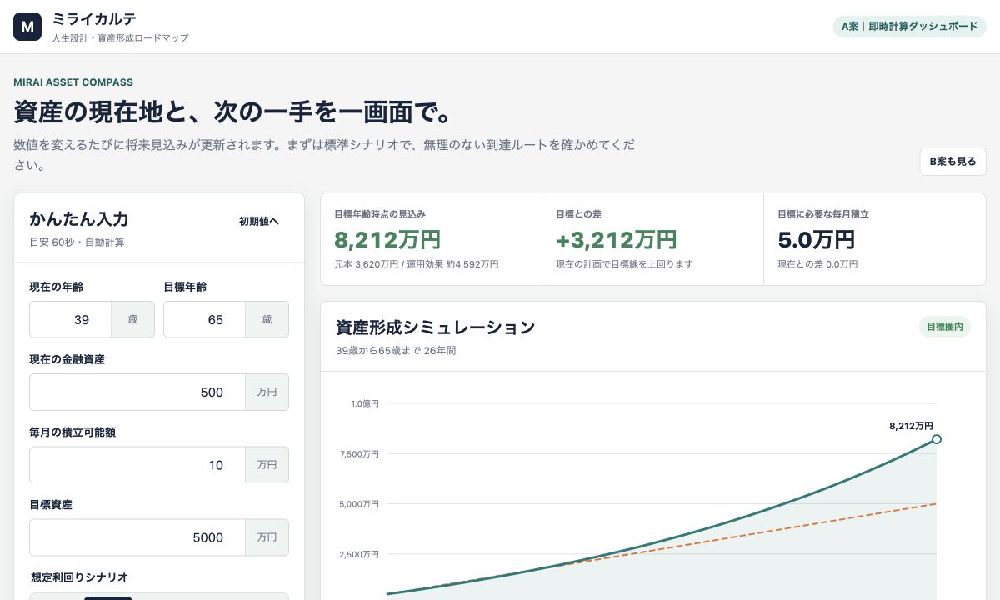
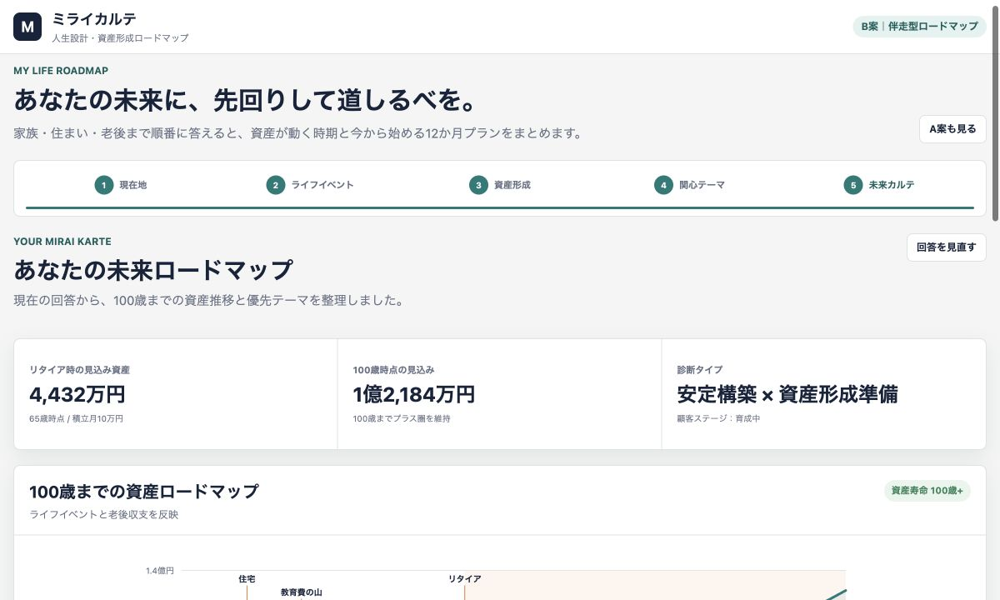

PATTERN A
60秒
即時計算ダッシュボード
数値を動かした瞬間に、見込み資産・不足額・必要積立額が変化。金融関心の高いユーザーが自分で比較検討しやすい構成です。
- 強み
- 速い・比較しやすい・SNSで見せやすい
- 向く導線
- アンケート特典、LINEミニ診断後
- 検証KPI
- 起動率、数値変更率、相談クリック率
MIRAI KARTE EXPERIENCE TEST
アンケート診断で関心を絞り、A案（金融）またはB案（不動産・ライフスタイル）へ振り分けます。A案・B案は金融機関へ提出できるレベルの項目まで取得し、共通形式で書き出します。

数値を動かした瞬間に、見込み資産・不足額・必要積立額が変化。金融関心の高いユーザーが自分で比較検討しやすい構成です。

住まい・教育・老後を順番に考え、100歳までの資産推移と12か月計画を生成。ミライカルテらしい「自己設計体験」を強く出します。
最初の1問で関心領域を絞り、1人10問に抑えた入口です。強みと弱みを分類し、誰に対しても最終的に提案が出る構成になっています。
TEST DESIGN
診断結果は共通。変えるのは「入力の見せ方」と「価値を感じるタイミング」です。
| 比較軸 | A案 | B案 |
|---|---|---|
| 最初の価値 | 入力と同時に将来金額が見える | 人生イベントを整理できる |
| 主な感情 | 「試したい」「比較したい」 | 「自分事だ」「相談したい」 |
| 入力負荷 | 低い | 中程度 |
| CRM情報量 | 基本・資産・関心中心 | 家族・イベント・老後まで深い |
| 有力な採用形 | 入口・再計算ツール | 本診断・会員更新カルテ |